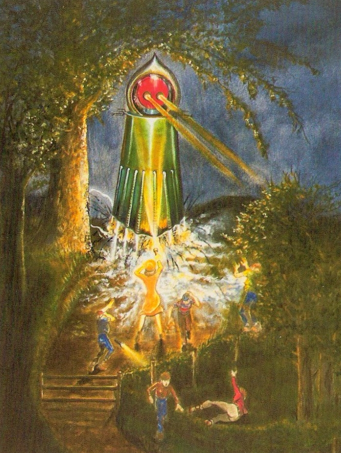

Another Explanation
What the witnesses described may not have been a creature at all, but a combination of environmental conditions and misinterpretation under extreme stress. The sighting took place at night on uneven terrain, where shadows from trees, fog, and flashlight beams could easily distort shapes and depth perception.
Some researchers suggest that the “burning eyes” may have been caused by light reflecting off an owl or similar nocturnal animal perched in the area. Under sudden fear and confusion, the brain tends to exaggerate familiar patterns into something unfamiliar or threatening. In this case, a normal wildlife encounter may have been transformed into something far more disturbing.
Sci-fi Comics and Movies
The early 1950s were a peak period for science fiction in American culture. Alien invasions, strange humanoid beings, and radioactive mutations were common themes in magazines, radio dramas, and early television. These ideas didn't just entertain people—they shaped how the unknown was imagined.
When the Flatwoods incident occurred, these cultural influences were already widespread. Even if the witnesses had no direct exposure to specific stories, the general imagery of “space beings” and monstrous figures had become part of the public imagination. This may have influenced how the event was later described, with details slowly aligning with popular sci-fi archetypes rather than strictly observable reality.
When the Unknown Feels Real
Psychology plays a major role in how rare or frightening events are remembered. In high-stress situations, the human brain prioritizes rapid interpretation over accuracy, often filling in missing details to create a complete picture of what it believes is happening.
This effect becomes even stronger in group settings. Once one person reacts with fear, others can unconsciously reinforce that interpretation, creating a shared version of the event that feels completely real to everyone involved. Over time, memory itself can shift—becoming less about exact perception and more about emotional impact.
In the Flatwoods case, the combination of fear, darkness, and sudden shock may have turned a brief encounter into a lasting mystery.
